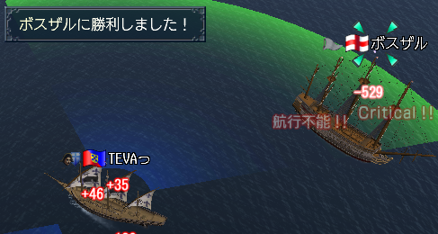
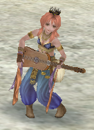

なんとなくWindowsUPDATEのサイトを訪れてみたところ、
以下のメッセージが表示され、更新出来ませんでした。
ムッカーとなって（
以下のサイトを信頼済みページに登録。あんまり信頼してないけど
http://update.microsoft.com
https://update.microsoft.com
http://*.update.microsoft.com
https://*.update.microsoft.com
http://download.windowsupdate.com
それでも直らないので、レジストリを疑ってみたところ
以下のキーが有効になってました。
HKEY_CURRENT_USER\Software\Microsoft\Windows\CurrentVersion\Policies\Explorer\NoWindowsUpdate
わ、これじゃん。
なんで有効になってんだヴォケー
ベースは16進のままで、値のデータを0に書き換えて問題解決。
何時の間にこんなキーが有効になってたんだろ(´･ω･)
油断も隙もありゃしないワー
因みに、使用環境としては、Windows2000 Professional ServicePack4
ネトゲが出来るんなら、すぐにでもLinuxに完全移行するんだけどナー
あまりにも天気が良いので、バイクに乗って飛び出しました。
なんか水の音が聞きたくなって。
で、伊勢方面向かう途中で、水量の多い良さゲな川原を発見したので
でかい岩の上で2時間程昼寝してきましたｗ
ほんとに、ただそれだけの為に走った。
悪くない気分だ。
前の会社での会議で、「斬新かつ実現可能な携帯電話像を描き、発表せよ」ってのがありまして。
その時、俺が出した案が我ながら面白いかもと思ったので、ここに記す。
- ペン型携帯電話 -
コンセプト：
現在の情報化社会に必須アイテムである携帯電話。
相手の電話番号を覚えるという事はあまりしなくなりました。
だって「メモリダイヤルから呼び出せばいいジャーン」ってな感じで。
で、防水とかワンセグとかシンプルとかスライド方式とか、様々な形がありますが、
結局電話としてのカタチはあまり変わりませんよね。
12個のダイヤルと、ファンクションキー。
ならば、あえて時代を逆行しようじゃないか。
アナログな感じの超デジタルなデバイスを提案しようじゃないかってコンセプトです。
基本セット：
・文字の書けるペン(電話本体)
※以下、便宜上「本体」と表現
・B5ぐらいの電子ペーパー(製本済みがよろしい)
※以下、便宜上「紙」と表現
・ハンズフリーマイク(Bluetoothとかで)
使用方法：
電話の掛け方
・紙にペンで直接相手の電話番号を書き込み、本体の先に付いているOCRとかに認識させ、発信ボタンをクリック。
相手に繋がったらば上記ハンズフリー機器にて会話を行う。
※OCRとはOptical Character Readerの略で、手書き文字や印字された文字を光学的に読み取り、
前もって記憶されたパターンとの照合により文字を特定し、文字データを入力する装置。
まぁ。紙に直接認識させればそれで済みそうですがね。
メールの受信
・電子ペーパーですから、本体経由で受け取った文字情報をそこに表示するのですよ。
これまで受け取ってきたメールとか、こう、ペラペラとページをめくる感じで見返したり出来ると面白いかも。
メールの送信
・紙に送りたい内容を本体で書き込み、相手のアドレスも直接書き込み、送信ズキューン
手書きですから、モチロンフリーフォーマット。
縦書き横書き斜め書きドンと来い。なんならいい加減なイラストでも送るがいい。
お仕着せのワケワカラン絵文字なんざ使ってんじゃねー
・・・現代技術だと割と簡単に実現出来そうなんですけどね。
新しい玩具みたいな感じで結構売れるかも？ｗ
どっかの会社で作ってくれないかな。
実はもう1つ案があるのですが、それはまた次回の日記で。
ｵﾜﾘ
昨晩、ロンドンの前でお友達と模擬戦を行いました。
結果は、、、
(･ω･)ｽﾝｽﾝｽｰﾝ
 (･∀･)ｲｪｱ!
(ﾟдﾟ;)ギャー！焼き討ち！？
山崎直子さんを乗せたスペースシャトルが、日本時間20:08 無事ランディングしました！
うおーよかったー！
実は耐熱タイルが剥落していたとかいうニュースを見ていたので、すっげー不安だったんですが、、、
嗚呼、本当に無事でよかった、、、(/_;)
それでは、俺のスーパーリスペクト野口聡一さん、引き続きISSでの作業を頑張ってください！
世界一応援しております。
|ω･)
まさかの連続更新。
続いて俺についてのなんだかんだ。
・一度寝ると死んだみたいに寝続ける。
・外部の音を遮断しているかの如く、何にも気付かない。
・寝言を言う
・寝笑いもするらしい。
・寝癖がひどい。
・寝相も悪い。
・身体が硬い。
・物腰は柔らかい
・球技が苦手。
・どのくらい苦手なの？
・何故語りかけてくる。
・まあ、細かい事は気にしないで。
・うむ、そうだな。ゴルフの打ちっぱなしで真後ろに飛ばした事がある。
・どうやって！？
・詳細不明。
・他には？
・思いつきで行動する為、一貫性が無い。
・ほう。
・あと、方向音痴。
・運転が好きなのに？
・うむ、昨日も書いたが迷子になった先で面白い事、珍しいモノが見れるからね。
・あれじゃない？迷子の自覚が無いんじゃ。
・まさに。どうしようもなくなるまで突き進む癖がある。
・同乗している者はたまったもんじゃないね。
・ああ、そうさ。だから一人での旅が好きなのだ。
・ははぁ、そんなもんですか。
・ちっちゃい時、転んでもそのまま寝転がって遊んでいたらしい。
・なんでよｗ
・恐らく、地面に近い風景が面白かったんじゃないかな。
・仰向けに転がった時は？
・ぼーっとそのまま空を見上げていたらしい。
・空が綺麗だったから？
・多分。
・世間に疎いとも聞きましたが？
・ええ、恥ずかしながら。
・テレビとか見ないの？
・低俗すぎて見る気も起こらん。
・会話についていけないんじゃ、、、
・テレビの話題など、要するに低俗じゃないか。
・あほめ。
・うっせー
・脳波は？
・は？
・いや、だから脳波。
・んー。「＿＿＿＿∧＿＿＿＿＿」こんなんじゃね？（何
でーでーでっででー
どうもTEVAです。
春が来て、やっと暖かくなってきたかなと思いましたが。
なんのなんの、毎日雨だったり寒かったりと気候が安定しませんね。
天気がいいと、外に飛び出したくなっちゃう俺。
じっとしているのは嫌いです。
あ、でも寝るのは好きです。何時間でも寝てしまいます。
では、俺はどんな奴なのか、ちょいと箇条書きでご紹介。
・生活リズムがだらしない。
・掃除好き。
・綺麗好き。
・物覚えが悪く、大事なことから片っ端から忘れる。
・一切人見知りをしない。
・釣りが好き。
・本が好き。
・スノーボードが好き。
・泳ぐのが好き。
・潜水で2分以上息を止めていられる。
・パソコンとか機械モノを分解組立てするのが好き。
・ご飯が好き。
・酒が好き。
・チョコレートジャンキー
・絵が好き。
・ゲームが好き。
・漫画が好き。
・なんでも独学でやるので、知ってる人が俺のやり方を見るとモドカシイ思いをしている。
・チャットが好き。
・歩くのが好き。
・バイクが好き。
・旅が好き。
・スカイダイビングが好き。
・クラシック音楽が好き。
・スキューバダイビングが好き。
「好き」がゲシュタルト崩壊を起こしそうだ(･ｘ･)
でもまだ続きます。
・シンプルなモノが好き。
・邪魔なモノは全て取り払おうとする。でも逆に、無かったら無いでいいかってなる。
・自転車が好き。
・嫌いな食べ物は無い。
・ボートにも乗る。
・自分で運転するのが好き。
・じっちゃんばっちゃん、年寄りが好き。
・クソ生意気なガキが好き。
・知らない事があると興奮する。
・ギターも弾く。
・プログラムも書く。
・Linux厨。
・写真も撮る。
・生物が好き。
・自然が好き。
・宇宙が好き。
・なのでロケットの打ち上げは絶頂すら覚える。
・野宿が好き。
・人と話すのが好き。
・基本的に、一度会ったら友達志向。
・めんどくさいと、トコトン何もしない。
・テンションの高い時はチート体力。
・計画性が無く、行き当たりばったり。
・迷子は俺の美学
つまり、アクティブな引きこもり？
お友達のマリアノッツァさん主催で、Fritzさん休止送別会開くぞー！
と、いう事で、セビリア教会前にて陸戦大会を行いました。
レギュレーションとしては以下の通り。
・攻撃力/防御力は合計200以内である事(ステータスにて判断)
・陶酔の酒、泥酔の酒、ディオニソスの酒は使用禁止
・上記以外のアイテムは何でもアリ
・指南書は店売りの1巻まで使用可。
・チーム分けはダイスでランダム。
・ただし、独断と偏見により明らかに強い方はチームリーダーに決定
色々ありますが、要するに出来るだけLv差を無くして皆でわいわい遊ぼうZE！ ってスタンスですな。
うむ、素敵だ。
で、満を持して開催された大会では、
あくびちゃんに似た、可愛い応援がありーの

応援によって元気付けられた凪さんが快勝しーの
ウチのチームだって元気付けられて全力で攻撃しーの
男爵はフルボッコにされーの
優勝したホイホイさんチームには告白されーの
思いっきり偏った結果にならず、期待通りワイワイ楽しめました！
で、お決まりの集合写真！
チーーズ
んで
この後は残れる方のみで個人戦やったんですけども
凪さんから10M、男爵から50Mの融資をしていただきまして(;ﾟｪﾟ)
更には重装船尾楼、ジェネラルキュイラス、カサドールクラウン、コラーダ、ティソナ、伊達家服 etc,,,
見たこと無いアイテムが一杯
思いがけず豪華賞品になっちゃった。
こんだけ盛り上がったのも、皆様のご協力あってのことです。
世界一ありがとうございます。
楽しかったｄふぇす（噛んだ
おまけ：不覚にも吹いた実況
キリラ「どうですか、実況のコザルさん。」
コザル「みんちさん、かわいいです。」
実況になってねーーだろ！(#ﾟдﾟ)¬⌒)д`）~'; ﾊﾟｧﾝｯ
2010/04/11 俺は27歳になりました。
さて、かつて無いほど腐った生活をしているわけですが、
今後どうしようかねぇ
ああ、今日もいい天気だ。
これからどこへ行こうか（何
昨晩はINしてすぐに、ともかさんより金の買い付けに行かないかとお誘いを受けました。
はいともさ。喜んでお供いたしますともさｗ
でっかい船に引っ張ってもらい、あっという間にリオデジャネイロ到着。
さー目的のブツ金、相場はいかがなもんかなー、、、198%↑
ちょ、待てや！ほぼ暴騰価格じゃねーがっｗ
交易店主にばっちりうなだれ、トパーズを満載してオーストラリアへ向かう事に。
さーて、順風満帆。
普段の行いの良いともかさんと俺、、
そしてもう一人、タンバリャークレア会長。
※ タンバリャーとは、日常的にタンバリンを持ち歩くタンバリストの事です
が、しかし。
今回の旅路ではなんと、タンバリンを持ってきていないとのこと。
わーそれが原因で悪い事一杯起こるんじゃねーの！？
わー出航して速攻嵐だー
わー満載した宝石が荷崩れ起こしたー
ぎゃーPK13人とか検索HITするしー
大罪を犯したクレア会長は、処刑人ともか氏により斬首刑に処されましたとさ。
|ω･)くさーつー よいとーこー いちどーはーおーいーでー♪ ﾊｰﾁｮｲﾅﾁｮｲﾅ
ってわけでただいまです(遅い
所用ついでにばっちり草津温泉に入湯してきました、どうもTEVAです。
草津温泉のお湯は酸性が強く、高温。だが一切加水をしないのが特徴。
ならば、適温にする為にはどうするかというと、
「湯もみ」という、でかい木の板を使ってバシャバシャやって、空気に触れさせて温度を下げるのです。
ん、俺ですか？
勿論体験してきましたともさ！ｗ
死ぬほど気持ちよかったので、一度は体験してみる事をお勧めします。
ただ、一回だけでは物足りないので、湯治と称して日に何回も行うと効果的です。
で、俺が行ったのは時間湯と呼ばれる上記湯治を体験するお風呂。
そこには湯長と呼ばれる女性がいて
「はーい足に20回、頭に40回お湯をかけて身体を慣らしてねー」
とか
「あと５ふーん！我慢だー！」「おーーっ」
とか
指示に従いながら時間を計っての入浴方法なのです。
ああ、こりゃ確かに気持ちがいい。
なんかしらんが汗が噴出す。超↑さっぱりする
ただ、今回の湯長さん。
花粉症か鼻炎かなんかしらないけど、ものすっごい鼻声で（
おまいが湯治しろっ と突っ込みを入れたくなりました。
また関東に行くことがあれば、是非もう一度体験したいですねー(´・∀・)
ｵﾜﾙ